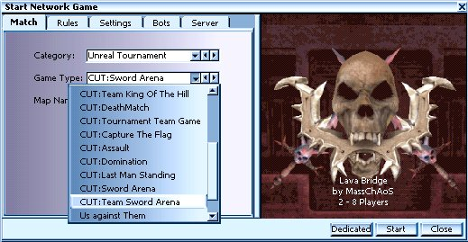

Server
Setup
main
| introduction
| installation | configs | starting
chaos |
| the
weapons
| features | koth |
server setup |
credits |

|
|
main
| introduction
| installation | configs | starting
chaos | |
|
** Start a ChaosUT server in 2 easy steps! **
Step 1) Run the provided CUT server .UMOD Step 2) Start a multiplayer game in any CUT gametype
It can be as easy as that! The following info is provided just for more detail, so you can tweak default settings, etc.
|
Edit the UnrealTournament.ini: (
NOTE: Simply running the provided ChaosUT Server
.UMOD eliminates this step !! )
|
|
|
First of all, go to your UnrealTournament/System/UnrealTournament.ini file, and under the [Engine.GameEngine] section, make sure you have the following lines:
ServerPackages=UTChaosMap IMPORTANT !! You must also make sure there are no blank spaces at the end of each line. UT doesn't like this. The above lines are needed by UT when you run a server. If you do not have these, then the clients that connect will not be able to see any of the Chaos weapons or other items that Chaos has to offer. This is the #1 reason why people have trouble getting a CUT server up and running. Also keep in mind that the clients will have to have any other files you specify under the servers Engine.GameEngine setting. ( e.g. models, skins, mods ) |
** You only need this next step if you want to change some of our default settings. **Go to the mods pull down menu and select Chaos Config. There are two areas a server admin might want to adjust, under the 'Game Settings' tab, and also the 'Turret Settings' tab.
|
Game Settings : |
|

|
Alternative HUD mode - Toggle this option if you have trouble with parts of the ChaosUT HUD not showing up when used with other mods. Or if you have trouble with the HUD's from other mods not showing up when you play them with ChaosUT. Respawn Protection - This provides you with temporary invulnerability when you respawn. This will help you avoid spawn campers and stand a chance to find a gun. Duration - This is the amount of time that the Respawn Protection will last. Weapon Replacement Method - This will allow you to modify the way CUT weapons will appear in the game.
Use Sniper Dot - Sniper dot is where you will get a dot that will show you were your aiming with the sniper rifle. Think of it as a laser sight. Use Grapple Hook - This will enable our famous grappling hook, allowing you to move about the map much easier.CTF Flag Drop on Grapple - This will cause flag carriers to drop the flag if they try to use the grappling hook. Initial GravBelt Charge - The number of seconds the GravBelt will last after you pick it up. |
|
Turret Settings : |
|

|
Empty Turret Duration (min 30) -
The amount of time a turret will remain after it runs out of ammo. If it
has not been reloaded before time is up, it will self destruct.
Turret Starting Energy Ammo - This is amount of energy the Turret has when it is beamed in. Turret Max Energy Ammo - This is the maximum amount of energy ammo a turret can have. Turret Starting Rocket Ammo - This is amount of Rockets the Turret has when it is beamed in. Turret Max Rocket Ammo - This is the maximum amount of rocket ammo a turret can have. Max Active Turrets - This is the maximum number of turrets allowed to be activated at the same time, regardless of who owns them. |
** That's it! The rules and map rotations are set up the same way as any
standard UT match.
Time to start the game!
**
NOTE: The preferred method for running a Chaos server is by using the CUT Gametypes
!
This method will make your server visible on the CUT Server Tab !!
|
Starting Multiplayer ChaosUT: with the gametypes
! |
|
| NOTE: There are a few features in CUT which are only available in the CUT Game types!! Examples would be custom CUT team icons, and a new HUD message, which identifies turrets as friend or foe. | |
|  | Start
UT as always, and then you simply use the "Game Type:" menu to
choose one of the provided CUT gametypes.
When using this method, you do not need to select the ChaosUT main mutator. All of the weapons and features of Chaos are loaded automatically when you use the Chaos gametypes. However, you may still choose to use some of the mini mutators. For example, you might use the CUT gametype, and still choose to use the CUT:SwordMelee mutator. |
|
Command Lines:
|
|
|
For those wishing to start a dedicated server from a command line, we offer these examples: For DM:
For CTF:
Sample bat file to start a koth server:
and for KOTH team game
|
|
main
| introduction
| installation | configs | starting
chaos | |
c'2002
Chaotic Dreams